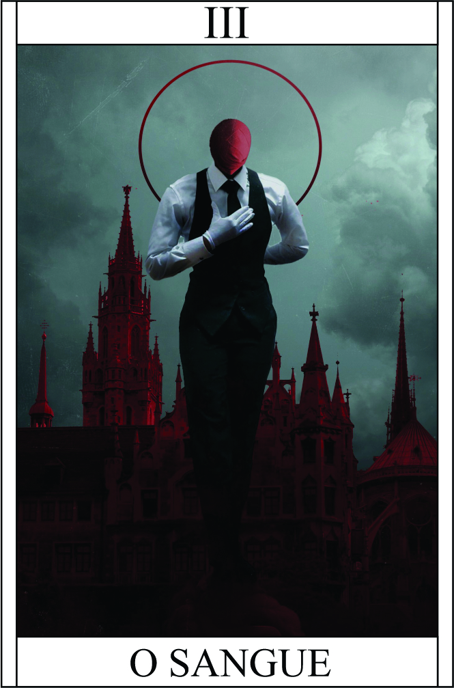

O Sangue
Têndencia: Neutro Mal
Passiva:
Sede de Sangue:
Seu dano é aumentado em +1 quando estiver enfrentando oponentes que estejam sangrando. Essa habilidade permite que você aproveite a fraqueza dos seus adversários ao ver o sangue fluindo de seus corpos. Ao perceber essa condição, sua determinação e agressividade aumentam, potencializando seus ataques. O aumento de dano em +1 reflete a ferocidade com a qual você ataca e causa danos adicionais aos oponentes que já estão debilitados.
Legado 1 - Garra Sanguinária
Suas unhas crescem como lâminas afiadas, permitindo que você perfure seus alvos. Ao atingir o alvo com suas garras, você é capaz de extrair o sangue e, ao fazê-lo, recupera 3 pontos de vida enquanto causa 6 pontos de dano.
Essa habilidade combina agressividade e vitalidade, permitindo que você se cure ao mesmo tempo em que causa danos aos seus oponentes.
As lâminas afiadas de suas unhas garantem que seus ataques sejam efetivos e capazes de penetrar as defesas dos adversários.
Condição: Tenha alguém sangrado por perto
Vorpal Perigoso | Ataque Fatal 5 ou 6 Capaz corta membro | Tronco e Cabeça precisa de confirmação | Dano: (Arma Branca + Força) + 3
Condição para ativar a habilidade:
É necessário Tocar na pessoa.
Legado 2 - Frenesi de Sangue - Sede Insaciável:
Ao entrar em um estado de Frenesi de Sangue, o campeão é tomado por uma voracidade desenfreada. Seu corpo e mente são impulsionados pela necessidade insaciável de sangue, aumentando sua ferocidade e potencializando seus ataques.
Fúria Sanguinária:
O dano do campeão é aumentado em 1d4 durante o Frenesi de Sangue. A presença do sangue do oponente desperta uma força interior, tornando seus golpes mais letais e devastadores.
Ataque Adicional:
Além do aumento de dano, o campeão ganha um ataque adicional imediatamente após o primeiro. Essa sequência rápida de ataques surpreende o oponente e o sobrecarrega, aproveitando ao máximo a abertura causada pela ferida sangrante.
Vulnerabilidade Sanguínea:
No entanto, durante o Frenesi de Sangue, o campeão também se torna mais vulnerável. Ele recebe +2 de dano adicional de todas as fontes, refletindo a imprudência e o descuido em sua busca desenfreada por sangue.
Custo do Frenesi:
O Frenesi de Sangue exige um alto preço do campeão, tanto físico quanto mental. Após utilizar essa habilidade, o campeão fica exausto e enfraquecido, requerendo um período de recuperação antes de poder ativá-la novamente.
O Frenesi de Sangue representa a manifestação da sede insaciável do campeão, impulsionando-o a uma brutalidade incomparável. No entanto, a natureza descontrolada dessa habilidade exige cautela, pois o campeão se expõe a um risco maior ao buscar a carnificina. A habilidade pode ser uma arma poderosa, mas também um fardo a ser administrado com sabedoria.
+1 em teste menos em mentais | Bônus + 1 de ataque | 1d4 Dano adicional | você recebe +2 de dano adicional de todas as fontes
Condição para ativar a habilidade:
Para ativar o Frenesi de Sangue, é necessário que o campeão tenha causado uma ferida sangrante em seu oponente durante o combate. A presença do sangue derramado desperta a sede insaciável do campeão, desencadeando seu poder feroz.
Restrição de uso:
Essa habilidade pode ser ativada uma vez a cada encontro com um inimigo, representando um momento de intensidade máxima no confronto.
Custo do Frenesi:
O Frenesi de Sangue exige um alto preço do campeão, tanto físico quanto mental. Após utilizar essa habilidade, o campeão fica exausto e enfraquecido, requerendo um período de recuperação antes de poder ativá-la novamente.
O Manto Sombrio é uma habilidade que canaliza o poder dos mortos para proteger o campeão, concedendo-lhe uma defesa sólida e a capacidade de enfrentar adversidades com mais segurança. No entanto, seu uso requer cuidado e estratégia, pois sua duração limitada exige um timing preciso para maximizar seus benefícios..
Legado 3 - Sede Insaciável - Banquete Profano:
Ao despertar sua Sede Insaciável, o campeão se entrega a um banquete profano, consumindo a energia vital do oponente à beira da morte para fortalecer-se..
Devorar Vida:
Ao ativar a habilidade, o campeão mergulha suas presas nas feridas do oponente, drenando sua vitalidade. O campeão recupera uma quantidade considerável de pontos de vida, igual 10HP.
Afraquecer o Inimigo:
A energia vampírica do campeão se espalha pelo corpo do oponente, enfraquecendo suas defesas e habilidades. O oponente afetado sofre uma penalidade de -2 em todas as rolagens de ataque e defesa durante o próximo turno.
Aura de Desespero:
O Julgamento Final emana uma aura sombria de desespero e terror ao redor do campeão, enfraquecendo a moral e as habilidades dos inimigos próximos. Isso pode afetar negativamente seus ataques e defesas, tornando-os mais vulneráveis e suscetíveis a erros.
Custo do Julgamento:
O Julgamento Final requer um alto custo de energia e vitalidade para ser realizado. Após utilizar essa habilidade, o campeão fica esgotado e precisa de um período de recuperação antes de poder usá-la novamente.
DANO: (Arma Branca + Força) + 1 | Recupera 10 HP
Condição para ativar a habilidade:
É necessário que o campeão esteja enfrentando um inimigo particularmente poderoso.
Restrição de uso:
A habilidade só pode ser ativada três vez a cada confronto, representando o ápice do apetite insaciável do campeão..
A habilidade Sede Insaciável permite que o campeão aproveite o momento final de seus oponentes mais vulneráveis para se fortalecer e garantir a vitória. No entanto, a natureza sombria e a drenagem de energia vital exigem cautela, pois o equilíbrio entre vida e morte pode ser tênue e perigoso.